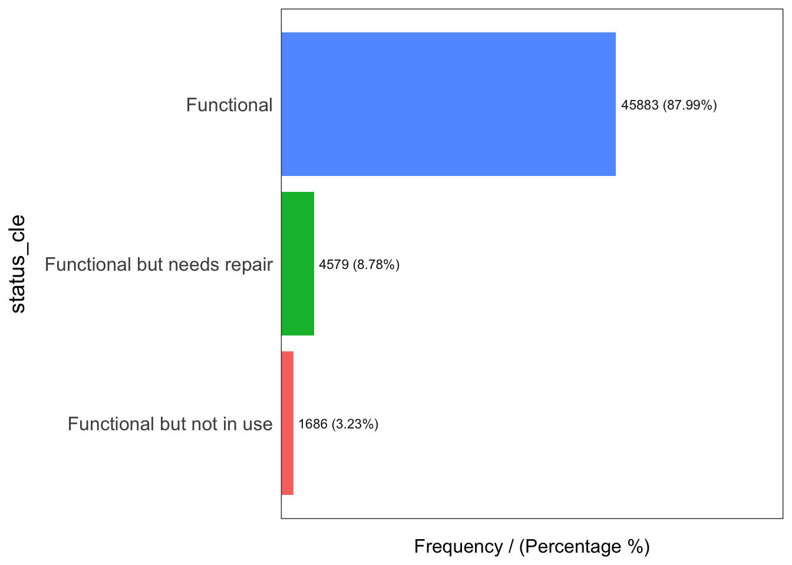
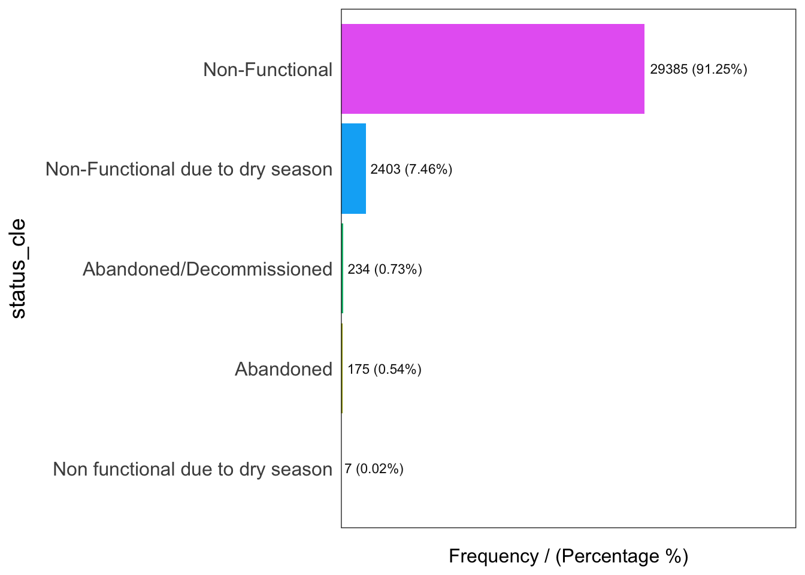
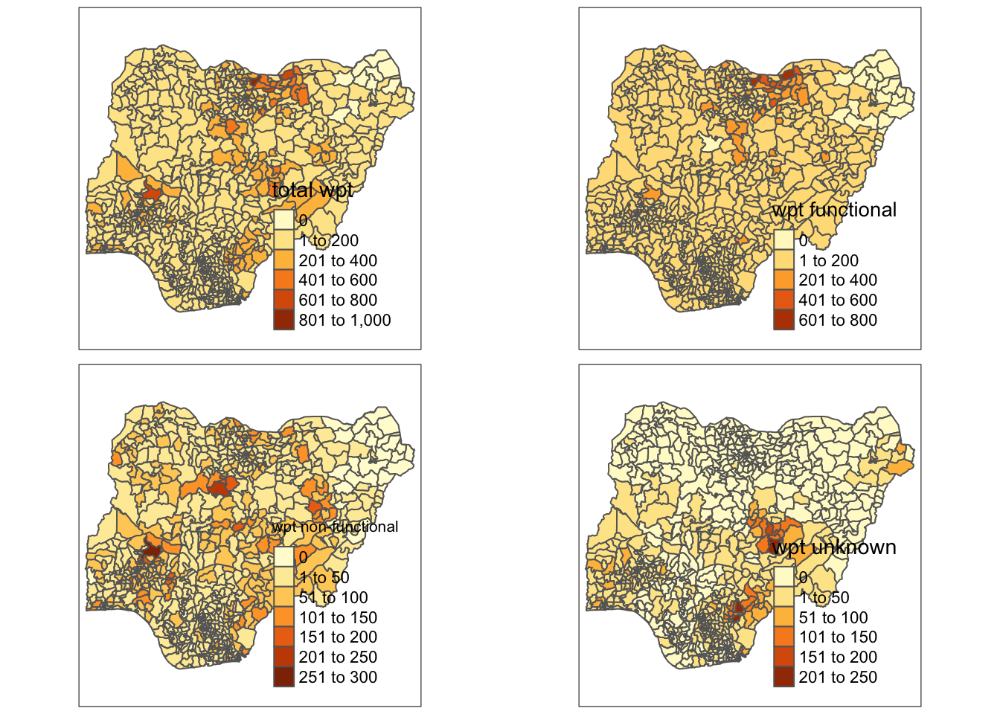

In-class Exercise 2: Birds of a feather flock together - Do functionally similar water points positively co-occur in Nigeria?
1. Getting Started
In the code chunk below, p_load() of pacman package is used to install and load the following R packages into R environment:
sf,
tidyverse,
tmap,
spdep, and
funModeling will be used for rapid Exploratory Data Analysis
2. Importing Geospatial Data
In this in-class data, two geospatial data sets will be used, they are:
geo_export
geoBoundaries-NGA-ADM2
2.1 Importing water point geospatial data
First, we are going to import the water point geospatial data (i.e. geo_export) by using the code chunk below.
st_read()of sf package is used to import geo_export shapefile into R environment and save the imported geospatial data into simple feature data table.filter()of dplyr package is used to extract water point records of Nigeria.
In the code chunk below, write_rds() of readr package is used to save the extracted sf data table into an output file in rds data format.
2.2 Importing Nigeria LGA boundary data
Now, we are going to import the LGA boundary data into R environment by using the code chunk below.
Reading layer `geoBoundaries-NGA-ADM2' from data source
`/Users/Yimin/ISSS624/In-class_Ex/In-class_Ex2/data' using driver `ESRI Shapefile'
Simple feature collection with 774 features and 5 fields
Geometry type: MULTIPOLYGON
Dimension: XY
Bounding box: xmin: 2.668534 ymin: 4.273007 xmax: 14.67882 ymax: 13.89442
Geodetic CRS: WGS 84Thing to learn from the code chunk above.
st_read()of sf package is used to import nga_admbnda_adm2_osgof_20190417 shapefile into R environment and save the imported geospatial data into simple feature data table.
3. Data wrangling
3.1 Recording NA values into string
In the code chunk below, replace_na() is used to recode all the NA values in status_cle field into Unknown.
3.2 EDA
In the code chunk below, freq() of funModeling package is used to display the distribution of status_cle field in wp_nga.

status_cle frequency percentage cumulative_perc
1 Functional 45883 48.29 48.29
2 Non-Functional 29385 30.93 79.22
3 Unknown 10656 11.22 90.44
4 Functional but needs repair 4579 4.82 95.26
5 Non-Functional due to dry season 2403 2.53 97.79
6 Functional but not in use 1686 1.77 99.56
7 Abandoned/Decommissioned 234 0.25 99.81
8 Abandoned 175 0.18 99.99
9 Non functional due to dry season 7 0.01 100.004. Extracting Water Point Data
In this section, we will extract the water point records by using classes in status_cle field.
4.1 Extracting funtional water point
In the code chunk below, filter() of dplyr is used to select functional water points.

status_cle frequency percentage cumulative_perc
1 Functional 45883 87.99 87.99
2 Functional but needs repair 4579 8.78 96.77
3 Functional but not in use 1686 3.23 100.004.2 Extracting non-funtional water point
In the code chunk below, filter() of dplyr is used to select non-functional water points.

status_cle frequency percentage cumulative_perc
1 Non-Functional 29385 91.25 91.25
2 Non-Functional due to dry season 2403 7.46 98.71
3 Abandoned/Decommissioned 234 0.73 99.44
4 Abandoned 175 0.54 99.98
5 Non functional due to dry season 7 0.02 100.004.3 Extracting water point with Unknown class
In the code chunk below, filter() of dplyr is used to select water points with unknown status.
5. Performing Point-in-Polygon Count
6. Saving the Analytical Data Table
Things to learn from the code chunk above:
mutate()of dplyr package is used to derive two fields namely pct_functional and pct_non-functional.to keep the file size small,
select()of dplyr is used to retain only field 3,4,9,10, 18,19,20,21,22,and 23.
Now, you have the tidy sf data table subsequent analysis. We will save the sf data table into rds format.
Before you end this section, please remember to delete away all the raw data. Notice that the only data file left is nga_wp.rds and it’s file size is around 2.1MB.
7. Visualising the spatial distribution of water points
